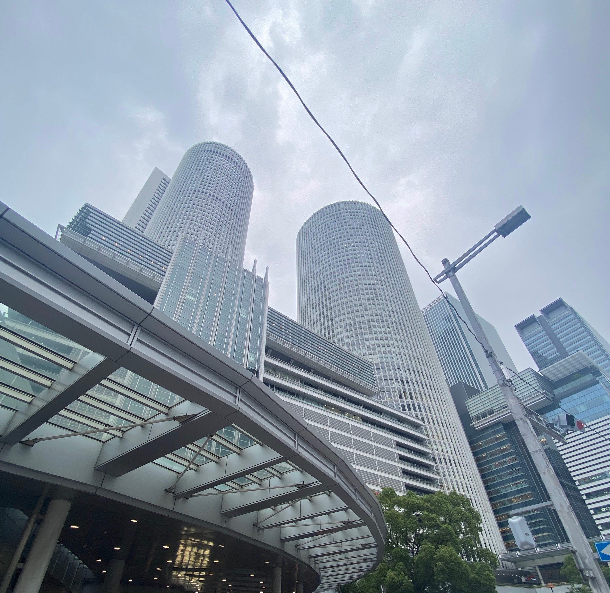
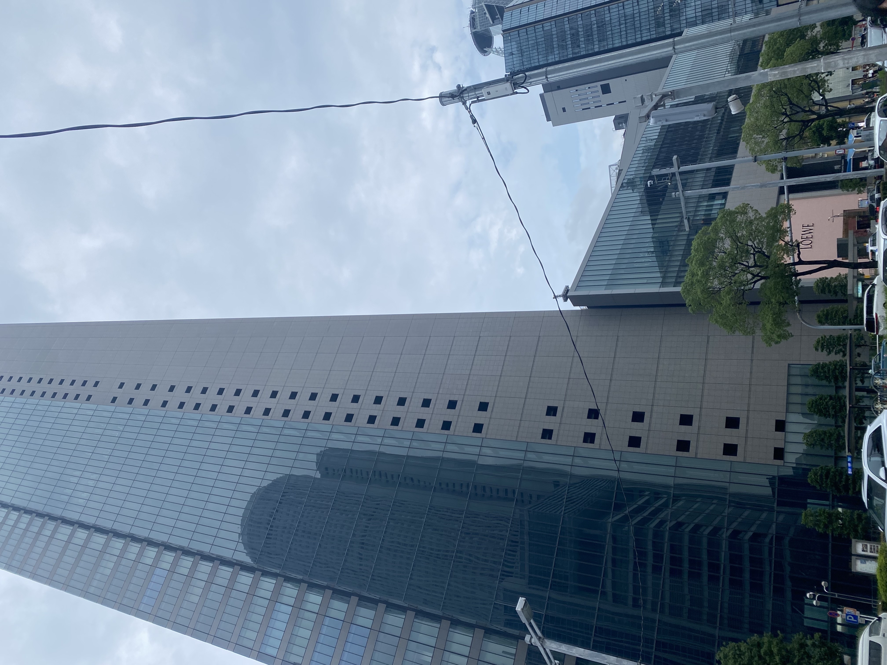

名古屋ショッピングおすすめスポット
こんにちは！
突然ですが，みなさんは名古屋でショッピングをするときどこへ行きますか？
名古屋在住の大学生3人がよくショッピングする場所をランキング形式でまとめてみました！
(もとの出身地は名古屋出身が1名，岐阜出身が1名，三重出身が1名と過半数が生粋の名古屋人ではないですが)
早速ランキングを見ていきましょう！
3位 名古屋PARCO
矢場町駅直結！駅から徒歩0分で入れるショッピングモールです！
なんと言っても駅の外に出ずとも行けるので天気を気にせずにおでかけができるのが魅力です！
また，猫カフェがPARCO midiの3階にあるのでショッピングに疲れたときに休憩で行くのもおすすめです！
名古屋PARCOホームページ:https://nagoya.parco.jp
実際に猫カフェに行ったときに撮った猫ちゃんの写真です 癒されますね～！
アクセスマップ
2位 ジェイアール名古屋タカシマヤ

ジェイアール名古屋タカシマヤは東急ハンズからハイブランドまで実用的なものも高価なものも取り扱っています！
また，地下には食料品なども売っており行けばなんでも揃うので，どこに行くか迷ったときにおすすめです！
12,13階にはレストランもあり，23時まで営業しているお店もあるので，夜までいても大丈夫なのも魅力です！
ジェイアール名古屋タカシマヤホームページ:https://www.jr-takashimaya.co.jp
友人と買い物帰りにディナーしました！ 並んでいるお店も多いですがどこもおいしいですよ！
アクセスマップ
1位 ミッドランドスクエア

栄えある1位はミッドランドスクエアでした！
ハイブランドが多く，ミッドランドスクエアは映画館があることもあり人気です！
夜には44-46階に位置するスカイプロムナードがおすすめです！
高さ約220mから見る名古屋は絶景です！
ミッドランドスクエアホームページ:https://www.midland-square.com
夜にスカイプロムナードへ行きました！ 私が訪れたのは1年程前で2022年ごろなのですが，2023年4月29日に改装が 行われてベンチや人工芝が増えたそうです！昼にくつろぎに行くのもいいかもしれませんね
アクセスマップ
いかがでしたか？ 名古屋，栄を中心にあるためショッピングが終わった後に行くのもよし！シンプルに買い物に行くのもよし！ どの場所も駅から近くアクセスがいいためおすすめです☆